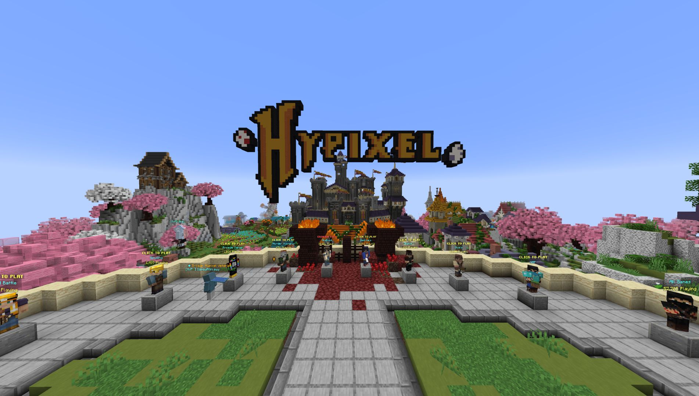
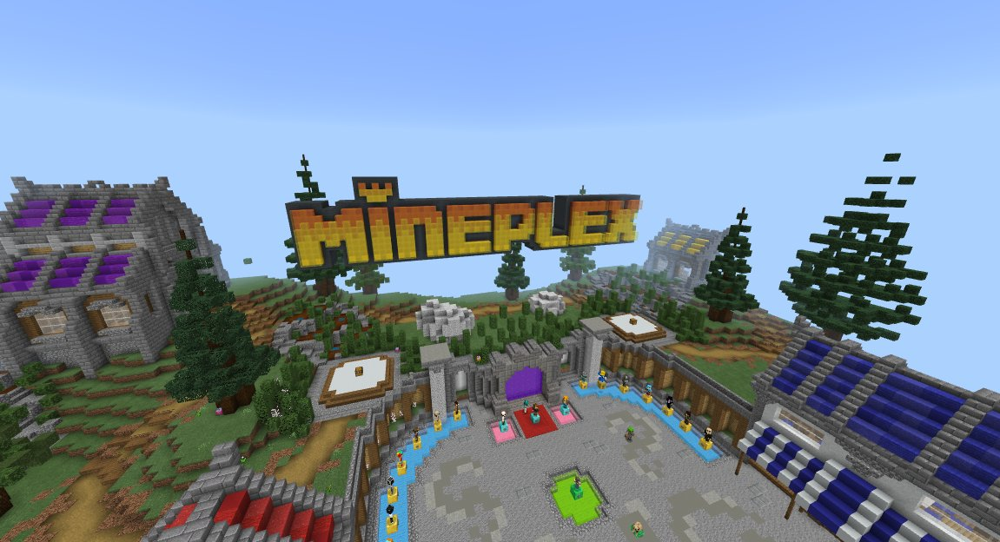
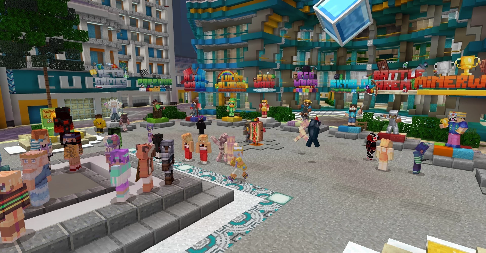
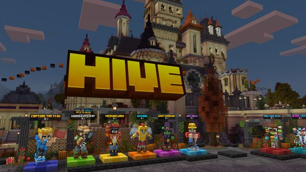
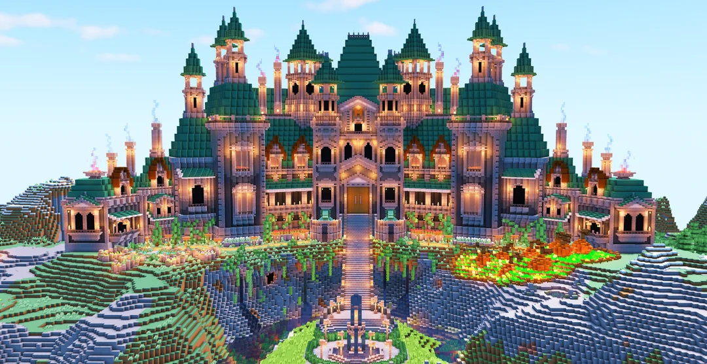
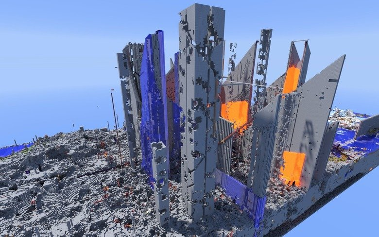

Alguns dos servidores mais procurados
Servidores são mundos online enormes criados pela própria comunidade do Minecraft.
Cada servidor da comunidade proporciona sua própria marca de diversão e exclusividade, oferecendo experiências multiplayer variadas e personalizadas.
Aqui estão alguns dos mais populares.
Hypixel
Hypixel é um dos maiores e mais populares servidores de Minecraft, conhecido por sua vasta gama de mini-jogos e modos de jogo. Ele tem atualizações frequentes, sempre trazendo novos conteúdos.
- Exemplos de jogos:
- Bed Wars: Os jogadores devem proteger sua cama enquanto tentam destruir as camas dos adversários.
- SkyBlock: Uma variação do modo de jogo clássico onde os jogadores começam em uma pequena ilha flutuante e precisam expandir seus recursos limitados.
- Murder Mystery: Um jogo de detetive onde os jogadores precisam descobrir quem é o assassino enquanto tentam sobreviver.
- Build Battle: Competição de construção onde os jogadores devem criar estruturas baseadas em um tema específico dentro de um tempo limitado.

Mineplex
Mineplex é outro grande servidor com uma grande variedade de mini-jogos e uma comunidade ativa. Ele possui vários eventos temáticos e competições que envolvem a comunidade.
- Exemplos de jogos:
- Super Paintball: Os jogadores usam armas de paintball para "marcar" os adversários e curar os membros de sua equipe.
- Survival Games: Inspirado em "Jogos Vorazes", onde os jogadores lutam até a morte em um mapa cheio de loot.
- Block Hunt: Um jogo de esconde-esconde onde os jogadores podem se transformar em blocos para se esconder dos caçadores.
- Cake Wars: Similar a Bed Wars, mas os jogadores devem proteger um bolo enquanto tentam destruir os bolos dos adversários.

CubeCraft
Conhecido por seus mini-jogos inovadores e mecânicas únicas. Contém mapas únicos e criativos para cada mini-jogo, além de uma interface amigável, sendo fácil de navegar e jogar.
- Exemplos de jogos:
- Lucky Islands: Uma combinação de sobrevivência e sorte onde os jogadores quebram Lucky Blocks para obter itens e vantagens.
- EggWars: Jogadores protegem seus ovos e tentam destruir os ovos dos adversários, semelhante a Bed Wars.
- Tower Defense: Um jogo de defesa de torres onde os jogadores constroem torres e enviam mobs para atacar os adversários.

The Hive
Famoso por seus mini-jogos acessíveis e divertidos, com uma comunidade amigável. Também contém eventos especiais durante feriados e épocas festivas.
- Exemplos de jogos:
- Hide and Seek: Os jogadores se transformam em blocos e tentam se esconder dos caçadores.
- DeathRun: Os jogadores correm através de um curso de obstáculos enquanto evitam armadilhas.
- Treasure Wars: Similar a Bed Wars, mas com um foco em proteger um tesouro.

Grian's Build Server
Um servidor focado na construção e na criatividade, oferecendo muitas oportunidades para aprender novas técnicas de construção.
- Algumas características:
- Concurso de Construção: Os jogadores podem participar de concursos de construção com temas específicos.
- Zonas de Construção: Áreas onde os jogadores podem construir livremente e mostrar suas criações.
- Comunidade de Construtores: Uma comunidade ativa de jogadores que compartilham dicas e feedback sobre construções.

2b2t
Um dos servidores de anarquia mais antigos e infames, conhecido por sua ausência de regras. O mundo nunca é resetado, tendo uma história longa e complexa. A paisagem é frequentemente devastada por jogadores, que não importa o que façam nunca são banidos permanentemente.
